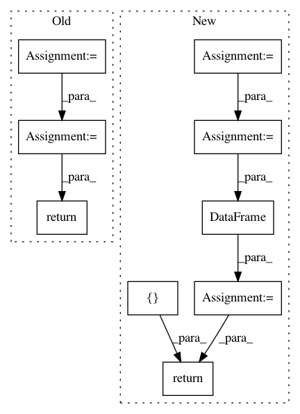

4a24e4e36ee175aef54b92eb03e08a2be7811a96,recordlinkage/datasets/febrl.py,,_febrl_links,#Any#,27
Before Change
org_bool = df_empty["rec_id"].str.endswith("org")
// merge the two frame and make MultiIndex.
pairs = df_empty[org_bool].merge(df_empty[~org_bool], on="key")
pairs_mi = pairs.set_index(["rec_id_x", "rec_id_y"]).index
pairs_mi.names = [None, None]
return pairs_mi
def load_febrl1(return_links=False):
Load the FEBRL 1 dataset.
After Change
def _febrl_links(df):
Get the links of a FEBRL dataset.
index = df.index.to_series()
keys = index.str.extract(r"rec-(\d+)", expand=True)[0]
index_int = numpy.arange(len(df))
df_helper = pandas.DataFrame({
"key": keys,
"index": index_int
})
// merge the two frame and make MultiIndex.
pairs_df = df_helper.merge(
df_helper, on="key"
)[["index_x", "index_y"]]
pairs_df = pairs_df[pairs_df["index_x"] > pairs_df["index_y"]]
return pandas.MultiIndex(
levels=[df.index.values, df.index.values],
labels=[pairs_df["index_x"].values, pairs_df["index_y"].values],
names=[None, None],
verify_integrity=False
)
def load_febrl1(return_links=False):
Load the FEBRL 1 dataset.
In pattern: SUPERPATTERN
Frequency: 3
Non-data size: 9
Instances
Project Name: J535D165/recordlinkage
Commit Name: 4a24e4e36ee175aef54b92eb03e08a2be7811a96
Time: 2018-03-10
Author: jonathandebruinhome@gmail.com
File Name: recordlinkage/datasets/febrl.py
Class Name:
Method Name: _febrl_links
Project Name: etal/cnvkit
Commit Name: aef8b785f1ee6882b768f80261019943bea64d7c
Time: 2016-05-19
Author: michael.p.schroeder@gmail.com
File Name: cnvlib/commands.py
Class Name:
Method Name: do_gainloss
Project Name: stellargraph/stellargraph
Commit Name: b17c639862ab1b9ab14e8c55a70e0ce002967e3f
Time: 2020-03-03
Author: Huon.Wilson@data61.csiro.au
File Name: tests/mapper/test_link_mappers.py
Class Name:
Method Name: example_HIN_homo